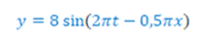

Soal Fisika
No.1
Perhatikan alat pengukuran jangka sorong berikut!
Hasil pengukuran dari jangka sorong tersebut adalah ... mm
a.40,4
b.41,4
c.41,6
d.41,7
e.42,5
JawabanD.
No.2
Bola bermassa 800 gram dilempar vertikal ke atas dari permukaan tanah dengan kecepatan awal 5 m/s, jika g=10 m/s2, maka usaha yang dilakukan gaya berat bola pada saat mencapai tinggi maksimum adalah ... J.
a.5
b.10
c.15
d.20
e.25
JawabanC.
No.3
Persamaan suatu simpangan gelombang berjalan adalah sebagai berikut:

Jika x dan y dalam meter serta t dalam sekon, maka cepat rambat gelombang simpangan tersebut adalah ... m/s.
a.2
b.4
c8
d.16
e.32
jawabanB.
No.4
Sebuah logam bermassa 1 kg yang sedang ditempa memiliki suhu 826 0C. Logam tersebut dicelupkan ke dalam 2 kg air bersuhu 20 0C. Jika kalor jenis air 4200 J/kg0C dan kalor jenis logam 700 J/kg0C, suhu saat terjadi kesetimbangan adalah ....
a.64'C
b.72'C
c.78'C
d.82'C
e.86'C
jawabanD.
No.5
Suatu sistem mengalami proses isobarik. Maka pernyataan berikut yang sesuai dengan sistem tersebut adalah....
a.proses berlangsung pada volume konstan
b.energi dalam sistem bernilai nol
c.tidak ada kalor yang masuk dan keluar dari sistem
d.sistem memiliki energi dalam yang konstan
e.sistem memiliki tekanan yang konstan